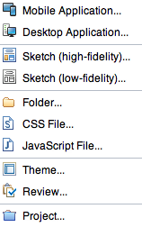
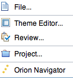
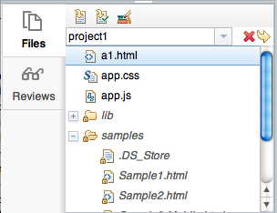

|  |
Create menu commands:
|
|  |
Open menu commands:
|
|
Top-right menus: User menu:
Application settings menu:
Help menu:
|
|
Files shows your file system in the cloud (see image at right).
The Files palette toolbar includes commands for creating and managing projects,
creating and managing project templates, downloading files and uploading files. Reviews shows the list of review sessions which either you initiated or to which you have been invited. |
 |